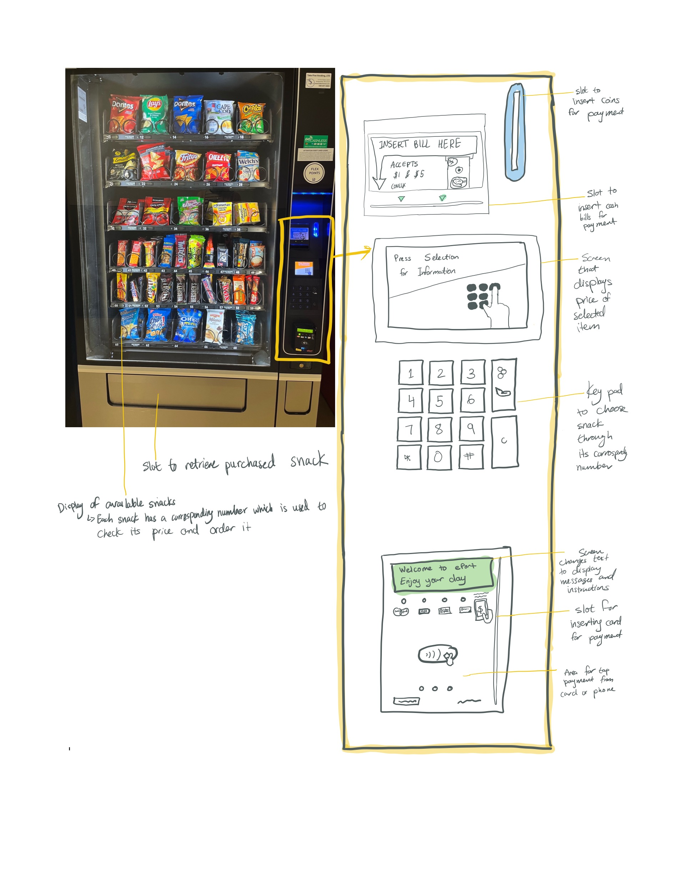

Vending Machine User Experience
personas & storyboarding
Summary: Mapped out user experience of campus vending machine
Process: Used information from observing users & conducting interviews to create empathy maps & a storyboard
Findings: The vending machine has room for improving its learnability by clarifying the order of steps when ordering. One way this could be done is by increasing the height & size of the screen displaying the steps
Interface Overview
This project focuses on the snack vending machine found at Brown University's CIT (Center for Information Technology). The machine offers a selection of various snacks, and is often used by students, staff, faculty, and campus visitors looking for a quick bite. It accepts multiple forms of payment, including cash, debit cards, Flex Points through Brown's student ID, and ApplePay. Users can check the price of a snack by punching in its corresponding number. In order to purchase a snack, a user must first put in their method of payment, wait for its authorization, and press the number of their chosen snack. The vending machine then drops that snack to the bottom slot, where the user can retrieve it. These instructions are provided step-by-step in a small screen near the bottom of the vending machine. Below is a picture of this vending machine, along with an annotated diagram of the purchasing interface. Hover on the image to expand.

User Observations & Interviews
I observed three people's interactions with the vending machine, and then asked them a list of questions to further understand their experiences and difficulties regarding using the vending machine's ordering/payment interface.
Observations
- User #1 had a quick interaction and seemed that they knew what they were doing from previous experiences. As soon as this user got to the vending machine, they tapped their debit card, waited a second for its authorization, then pressed the button to get their chosen snack and retrieved it.
- User #2 took a while to look through the snack options. They checked the information of several snacks by pressing in their corresponding numbers. They then swiped their student ID and looked to be reading from the screen near the card slot, following the steps to successfully get their chosen snack.
- User #3 first chose a snack, pressed its number and the order button, and then swiped their card. The student looked to the snack display, seemingly waiting for the snack to drop. They again tried swiping their student ID and waiting. When that didn't work, they tried swiping their ID followed by immediately pressing the snack's number. This also did not work, and a nearby passerby advised them that they need to wait for the card to authorize before pressing the snack number. The student followed this and was finally able to get their snack. The student never seemed to notice the small green screen with instructions, which was located much below eye-level.
Interview Questions & Summary of Answers
- Why did you decide to use this vending machine?
Everyone answered that they wanted a quick snack. User #2 mentioned that the vending machine accepted Flex Points, so they liked that they wouldn't have to spend their own money.
- Is this your first time using this vending machine? If not, how many times have you used it before?
User #1 was the only one who had previously used the vending machine. This was their third time, the two previous times being in the past two weeks.
- >Did you know which snack you wanted to purchase before coming to the vending machine?
User #1 knew exactly which snack they wanted to get. User #2 had no idea, since they did now know which snacks were offered until they got to the machine. User #3 knew they wanted chips before seeing the options, but did not have a specific brand/flavor in mind.
- Did you check the price of the snack before purchasing it? If not, do you know how to check the price?
User #1 had to check the price the first time they used the machine, but did not to check it this time because they already knew how much it cost. User #2 did check the price. User #3 did not but knew how to do so.
- On a scale of 1-10, how intuitive was the process of purchasing a snack? Explain. How can the process be more intuitive?
User #1 rated it as a 8, since it could be hard to know where to start ordering the first time, but it quickly becomes clear once you start. User #2 rated it as a 7, since they had to read the instructions on the screen, and it was not originally clear that the instructions would be located there, which could be fixed by making the screen bigger, brighter, and placing it at eye-level. User #3 rated it as a 4 since there was no clear outline that you needed to swipe first, wait, and then use the keypad to order. User #1 and #3 both suggest writing out the steps on the vending machine.
Persona Maps
Using these user observations and interview answers, I created two empathy maps that outline the actions, words, emotions, and thoughts of two different personas that would use this vending machine.
Thorough Thelma
Thelma is a CS student who is interacting with this vending machine for the first time. She has a 10-minute break between work and her next class, which are both located at the CIT, so she decides to get a snack. She cares both about taste and saving money, so she takes her time comparing the different options. She does not intuitively know the purchasing process, so she carefully look for and read instructions.
Why Thelma?: Thelma's concern with saving money is representative of a lot of college students, who are the main consumers of this vending machine.
Interface problems: Since the prices are not written out on the display, it takes a long time to compare each snack's price one-by-one.
Tired Tanya
Tanya is working on a CS project in the middle of the night and is starting to feel tired. She decides to get an energy drink from the vending machine to help her stay up until she finishes her project.
Why Tanya?: Often, people use a vending machine because of their convenience and to save time from going to a store. Like many others who would choose to use this vending machine, Tanya is in a rush.
Interface problems: The instructions screen is not clear or eye-catching, so Tanya is not aware of the step-by-step purchasing process. She does not know that she must wait for her card to authorize before pressing the snack number and it takes her a while to learn this. The process takes her much longer than she anticipates.
Storyboard
I then imagined the possible step-by-step journey of Thorough Thelma (Persona #1)'s experience with the vending machine, including her motivation, ordering process, and outcome. I represented this journey through a storyboard comprised of six sketched panels.